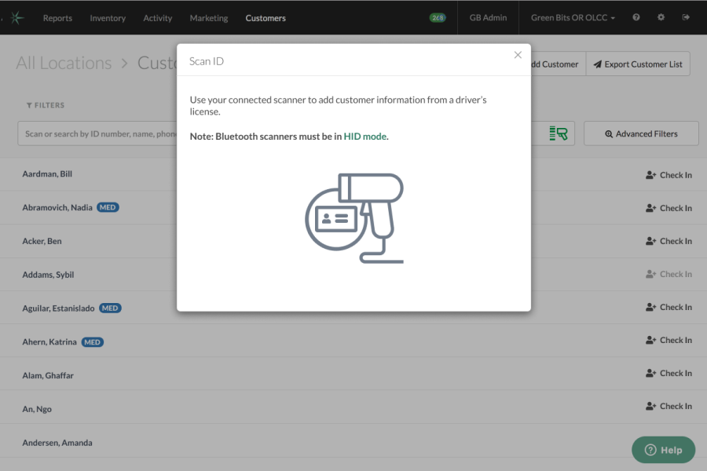

Greenbits Express Checkin, 2020
Skills
- Qualitative research (customer interviews, contextual observation)
- UX design
- Usability testing
Tools
- Figma
- Sketch
- InVision
Artifacts
- Clickable prototype
- Point in time historical documentation
- Usability test hypotheses and results
Problem
Greenbits was lagging behind competitors in giving customers the ability to quickly and easily validate shoppers’ DOB through their drivers license. This was a major pain point with valuable customers, and while we were already in the beta process with a magstripe swipe solution, we heard that customers wanted more options.
Solution
After identifying gaps in the current solution – only a handful of state IDs could be read on swipe, resistance to buying new hardware, unintuitive flow for adding scanned customer data to their customer database – we determined we would focus on a solution that would only take one to two sprints to implement a fully functional version.

Based on those constraints, I used Sketch to create mockups, and InVision to make a clickable prototype for usability testing. I wrote a test plan, including hypotheses, and a script for remote testing. Then I recruited five test participants from customer who had contacted us regarding their need for a better shopper checkin solution and tested our hypotheses.

Result
Our team was able to release the new checkin feature to beta customers, when we were able to gather feedback. I learned that there was confusion about which barcode users should scan, the 1d or 2d version, and iterated quickly to change the instructional graphic to reduce user error. We were also able to address edge cases, such as caregiver purchasing – these changes were made in Figma, as the design team changed platforms. The feature is now live with these changes, and checkin has helped Greenbits retain valuable customers as well as appeal to new markets.